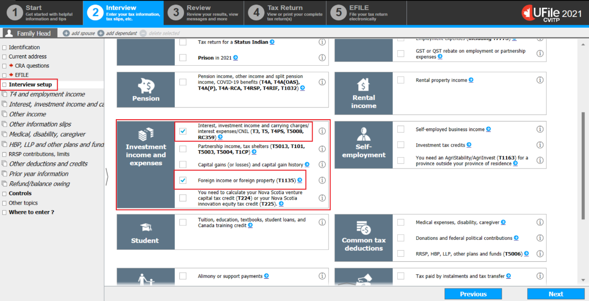
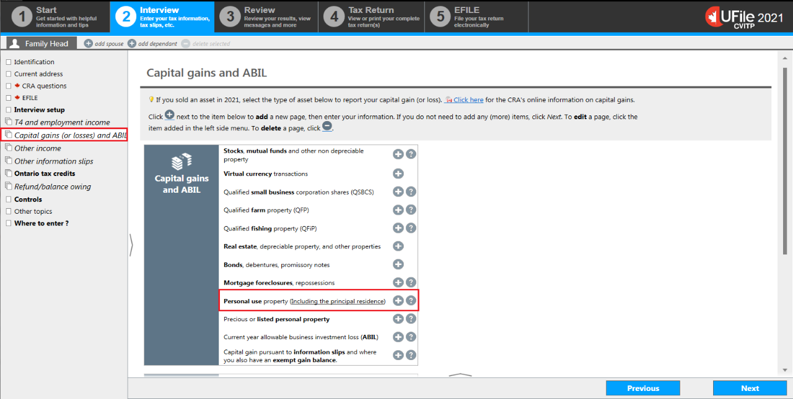
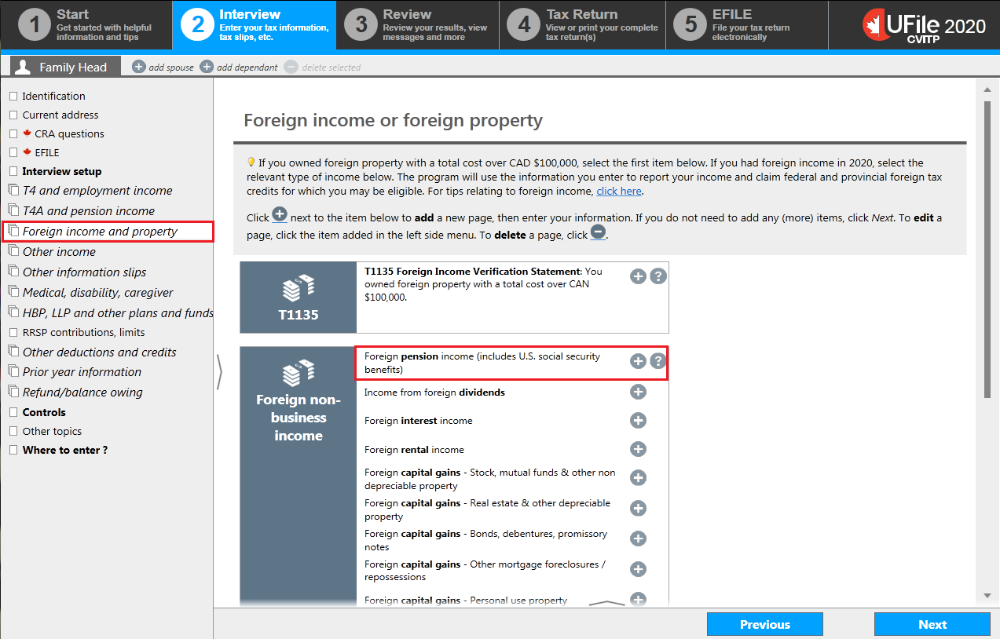

Interview setup
- select the Interview setup from the left side menu
Instructions for T5 and interest not a slip
- from the Investment income and expenses section, check the box next to Interest, investment income and carrying charges/interest expenses/CNIL and click Next
click next step
Instructions for sale of a principal residence
- check the box next to Capital gains (or loses) and capital gain history and click Next
click next step
Instructions for United States social security benefits
- check the box next to Foreign income or foreign property (T1135) and click Next
Interest income

- select Interest, investment income and carrying charges from the left side menu
Instructions for T5 slip
- click the + sign next to T5 – Investment income
click next step
Instructions for Interest income not on information slips
- click the + sign next to Interest income not on an information slip for:
Interest income from a T5 slip

- enter the name of the issuer of the T5 slip
- when a percentage is entered in the field When the income relates to a JOINT account, enter your percentage share in the account, otherwise leave blank, a question is generated:
- Do you wish to transfer the remainder to your spouse’s tax return (if applicable)? When you answer Yes, the software will automatically report the difference in the spouse’s or common-law partner’s tax return if you are preparing the tax returns together
- enter the total amount of interest in Box 13, even if it is a joint account
Interview setup
- select the Interview setup from the left side menu
Instructions for T5 and interest not a slip
- from the Investment income and expenses section, check the box next to Interest, investment income and carrying charges/interest expenses/CNIL and click Next
click next step
Instructions for sale of a principal residence
- check the box next to Capital gains (or loses) and capital gain history and click Next
click next step
Instructions for United States social security benefits
- check the box next to Foreign income or foreign property (T1135) and click Next
Interest income
- select Interest, investment income and carrying charges from the left side menu
Instructions for T5 slip
- click the + sign next to T5 – Investment income
click next step
Instructions for Interest income not on information slips
- click the + sign next to Interest income not on an information slip for:
Interest not recorded on information slips

Instructions for Interests from a financial institution that did not issue a slip
- enter a description (i.e. Bank account) in the field Interest income from a banking institution or other Canadian source and the total amount received in the year in the field next to it
Instructions for Interests found on a notice of assessment or reassessment
- scroll down to the field Interest on any tax refund received in the year as shown on your notice of assessment or reassessment
- enter a description (i.e. tax refund interest) and the total amount received in the year in the field next to it
Interview setup
- select the Interview setup from the left side menu
Instructions for T5 and interest not a slip
- from the Investment income and expenses section, check the box next to Interest, investment income and carrying charges/interest expenses/CNIL and click Next
click next step
Instructions for sale of a principal residence
- check the box next to Capital gains (or loses) and capital gain history and click Next
click next step
Instructions for United States social security benefits
- check the box next to Foreign income or foreign property (T1135) and click Next
Capital gains and ABIL
Instructions for sale of a principal residence
- select Capital gains (or losses) and ABIL from the left side menu
- click the + sign next to Personal use property (Including the principal residence)
Personal use property (sale of a principal residence)

- fill in the appropriate fields under:
- Date of acquisition
- Date of disposition
- Proceeds of disposition
- Your percentage share of capital gain/loss recorded here. When a percentage is entered, another question is generated:
- Do you wish to transfer the remainder to your spouse’s tax return (if applicable)? Once you answer Yes, the software will automatically generate the T2091 and Schedule 3 for the spouse only if you are filing the tax returns together.
Ufile tip There will be no need to repeat these steps in the spouse or common-law partner’s profile.
- answer Yes to the question Designation of the property as a principal residence?
Ufile tip Once you have selected Yes, additional fields will generate on the same page.
Personal use property (sale of a principal residence) continued

- scroll down to complete the required fields under Address of the principal residence
- use the drop-down menu and choose T2091 – Designation of a property as a principal residence by an individual when asked to Select the form to use (T2091 or T1255)
- under Designation, enter the years the property was designated as the individual’s principal residence; the year provided in the From box should correspond with the Date of acquisition
Ufile tip When entering a year earlier than 1972 in the field From, the software will automatically default the selection back to 1972, as it was the first year the designation was made possible.
Interview setup
- select the Interview setup from the left side menu
Instructions for T5 and interest not a slip
- from the Investment income and expenses section, check the box next to Interest, investment income and carrying charges/interest expenses/CNIL and click Next
click next step
Instructions for sale of a principal residence
- check the box next to Capital gains (or loses) and capital gain history and click Next
click next step
Instructions for United States social security benefits
- check the box next to Foreign income or foreign property (T1135) and click Next
Foreign income or foreign property
Instructions for United States social security benefits
- select Foreign income and property from the left side menu
- click the + sign next to Foreign pension income (includes U.S. social security benefits)
U.S. Social Security benefits

- select United States (tax treaty with Canada) for the field Country from where you received the foreign income
- enter U.S. Social Security for the Description of the source of the foreign income
- enter the applicable Exchange rate to apply
- select the applicable Type of foreign pension income from the drop down menu
- enter the Amount of foreign income received
- click Next